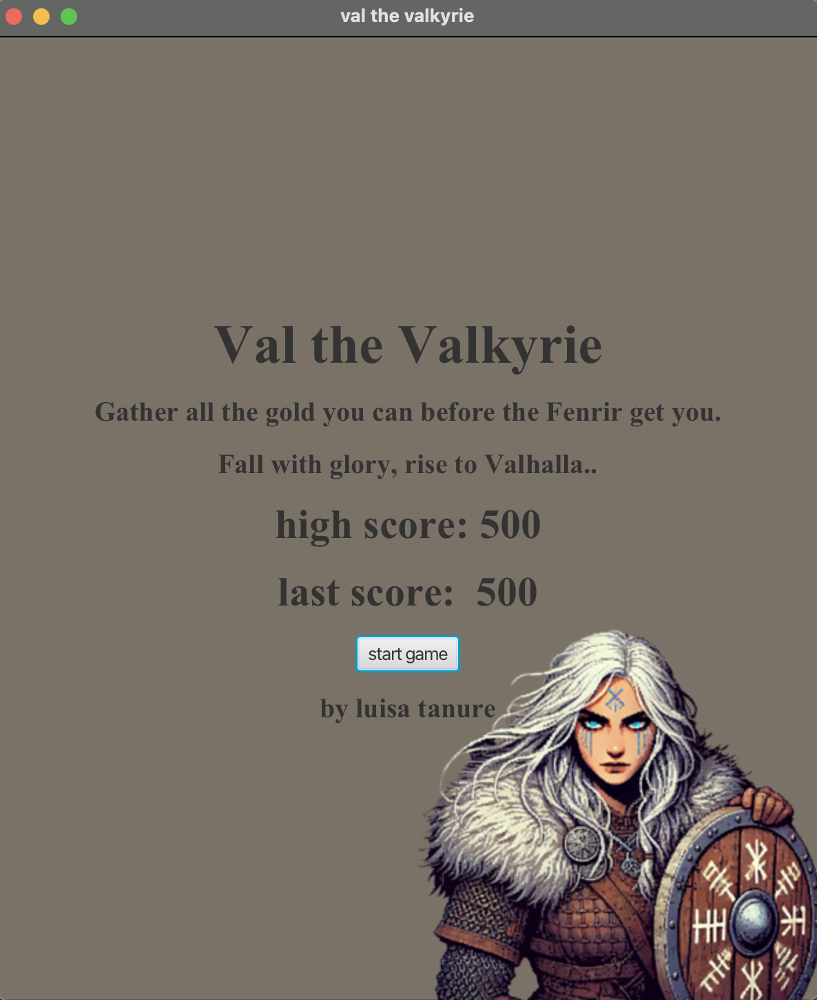
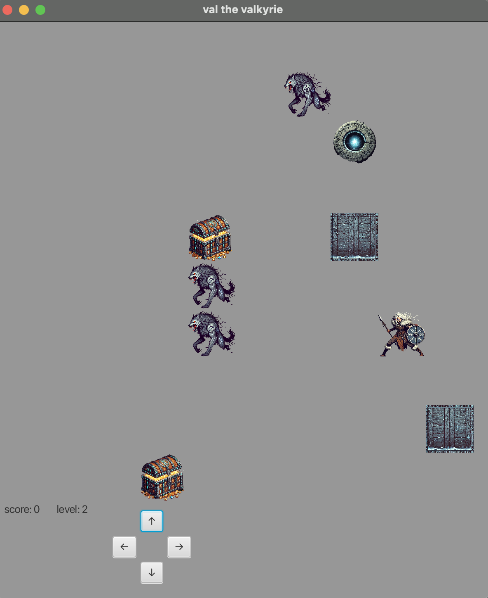

Resources

Title Screen
Gameplay Live Demo
Live Demo
An arcade-style JavaFX game featuring a Norse warrior navigating levels, defeating enemies, and collecting power-ups — built with MVC, Observer, and Factory design patterns.
Val the Valkyrie is an arcade-style 2D game built with JavaFX. Players control Val, a Norse warrior, across multiple levels with increasing difficulty. Each level introduces new enemy types, environmental hazards, and collectibles, with a progression system that rewards exploration and combat skill.
The game was built as a software engineering exercise with a strong emphasis on design patterns. Clean separation of concerns — game logic, UI rendering, and state management — makes the codebase easy to extend and test.
Built entirely in Java using the JavaFX framework for rendering and event handling.
This project was created for a Systems Fundamentals course and gave me the opportunity to combine several interests: coding, gaming, and Norse mythology. Building Val the Valkyrie allowed me to explore how software architecture and game mechanics can work together in a small but complete system.
One of the main challenges was keeping the UI synchronized with the game state as the player moves, collects treasure, and encounters enemies. Designing reliable movement and collision logic on a grid also required careful validation of actions so that interactions behave consistently.

Title Screen
Gameplay
Live Demo